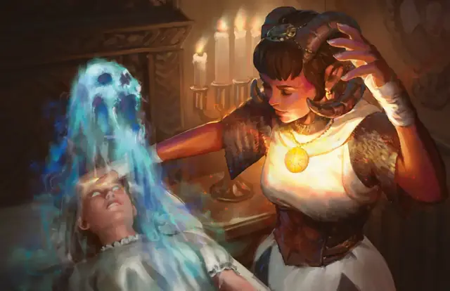

Рассеивание добра и зла
Dispel Evil and Good
5 уровень, Ограждение

Время сотворения Действие
Дистанция На себя
Компоненты В, С, М (порошок серебра и железа)
Длительность Концентрация, вплоть до 1 минуты
Подклассы Домен упокоения (Жрец)
Пока действует заклинание, Исчадия, Небожители, Нежити, Феи и Элементали совершают с Помехой броски атаки по вам. Вы можете закончить заклинание преждевременно, применив один из следующих эффектов:
Изгнание. Действием Магия вы выбираете одно видимое вами в пределах 5 футов существо; оно должно преуспеть в спасброске Харизмы, иначе будет отправлено на свой родной план бытия, если уже не находится на нём. Нежить отправляется в Царство Теней, а Феи — в Страну Фей.
Разрушение чар. Действием Магия вы касаетесь существа, которое получило состояние Испуганный или Очарованный от одного или более существ перечисленных выше типов или одержимо ими. Это существо теряет одержимость и состояния Испуганный или Очарованный от этих существ.